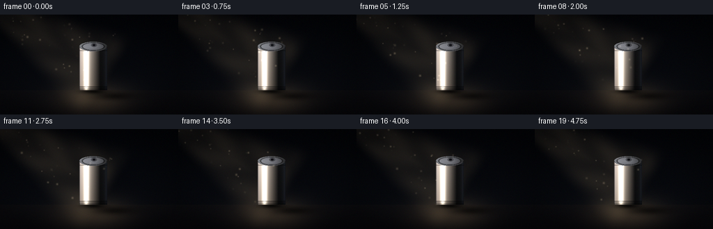
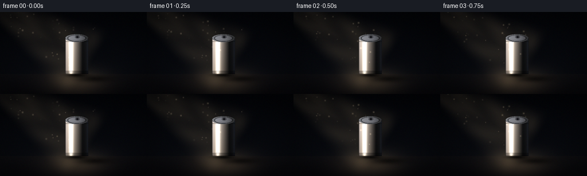

CODING AGENTS AS PIXEL WORLD MODELS
traex/Seed-2.1-Pro-0915 · phygen_042
点击播放 · 原生 RGB 像素
逐轮保存的候选
回放视频、检查图与代码变化。
每份候选均可单独播放。实际图片检查记录在下方工具轨迹中。
候选 01播放与检查图
点击播放 · 原生 RGB 像素


展开代码变化
--- 上一保存版本
+++ 本次保存版本
@@ -0,0 +1,179 @@
+"""Procedural renderer for: a diagonal light ray on a metal can in the dark.
+
+Generates 20 RGB frames (256x144 @ 4fps) using only numpy + PIL geometry,
+shading and compositing. Rendered at 2x supersampling, then downsampled.
+"""
+import math
+
+import numpy as np
+from PIL import Image
+
+import artifact_io
+
+SS = 2 # supersampling factor
+W, H = 256, 144
+W2, H2 = W * SS, H * SS
+N_FRAMES, FPS = 20, 4.0
+
+# --- Scene geometry (in supersampled pixels) ---
+CX = 268 # can center x
+FLOOR_Y = 218 # floor line
+R = 40 # can radius
+Y_C = 92 # can top-lid ellipse center y
+RY = 14 # lid ellipse vertical radius
+LIGHT_SRC = np.array([-90.0, -70.0])
+BEAM_TARGET = np.array([CX + 6.0, Y_C + 70.0])
+
+rng = np.random.default_rng(42)
+
+# Floating dust motes living inside the beam (parameterized along the beam).
+DUST_N = 46
+dust_t = rng.uniform(0.05, 1.0, DUST_N)
+dust_p = rng.uniform(-0.85, 0.85, DUST_N)
+dust_speed = rng.uniform(0.01, 0.035, DUST_N)
+dust_phase = rng.uniform(0, math.tau, DUST_N)
+dust_size = rng.uniform(1.0, 2.4, DUST_N)
+
+
+def smoothstep(e0, e1, x):
+ x = np.clip((x - e0) / (e1 - e0), 0.0, 1.0)
+ return x * x * (3 - 2 * x)
+
+
+def render_frame(index):
+ t = index / FPS
+ yy, xx = np.mgrid[0:H2, 0:W2].astype(np.float32)
+ px = xx + 0.5
+ py = yy + 0.5
+
+ # ---------- Background: near-black room with a faint floor ----------
+ v = py / H2
+ img = np.zeros((H2, W2, 3), np.float32)
+ top_col = np.array([3, 4, 7], np.float32)
+ wall_col = np.array([9, 11, 16], np.float32)
+ img[:] = top_col[None, None, :] * (1 - v[..., None]) + wall_col[None, None, :] * v[..., None]
+
+ floor_mask = py >= FLOOR_Y
+ fv = np.clip((py - FLOOR_Y) / (H2 - FLOOR_Y), 0, 1)
+ floor_col = np.array([12, 12, 15], np.float32) * (1 - fv[..., None]) + \
+ np.array([7, 7, 10], np.float32) * fv[..., None]
+ img[floor_mask] = floor_col[floor_mask]
+
+ # ---------- Warm light pool on the floor around the can ----------
+ flicker = 1.0 + 0.045 * math.sin(math.tau * 0.5 * t) + 0.02 * math.sin(math.tau * 1.7 * t + 1.3)
+ pool_d2 = ((px - CX) / 135.0) ** 2 + ((py - (FLOOR_Y + 26)) / 60.0) ** 2
+ pool = np.exp(-pool_d2 * 1.8) * 0.16 * flicker
+ img += pool[..., None] * np.array([255, 206, 138], np.float32)
+
+ # ---------- Diagonal volumetric light beam ----------
+ d = BEAM_TARGET - LIGHT_SRC
+ dlen2 = float(d @ d)
+ rel = np.stack([px - LIGHT_SRC[0], py - LIGHT_SRC[1]], -1)
+ tt = (rel @ d) / dlen2
+ proj = LIGHT_SRC + tt[..., None] * d
+ perp = np.hypot(px - proj[..., 0], py - proj[..., 1])
+ half_w = 16.0 + tt * 130.0
+ edge = 1.0 - smoothstep(half_w * 0.35, half_w, perp)
+ window = smoothstep(-0.05, 0.12, tt) * (1.0 - smoothstep(1.0, 1.12, tt))
+ streaks = 0.82 + 0.18 * np.sin(tt * 14.0 + perp * 0.06 + index * 0.35)
+ beam_a = 0.115 * edge * window * streaks * flicker * (0.65 + 0.35 * tt)
+ img += beam_a[..., None] * np.array([255, 218, 158], np.float32)
+
+ # ---------- Can shadow stretched across the floor (away from light) ----------
+ sx, sy = CX + 60.0, FLOOR_Y + 17.0
+ sh_d2 = ((px - sx) / 82.0) ** 2 + ((py - sy) / 16.0) ** 2
+ shadow = np.exp(-sh_d2 * 2.0) * 0.6
+ shadow *= floor_mask
+ # tight contact shadow directly under the can
+ contact_d2 = ((px - CX) / (R + 9.0)) ** 2 + ((py - (FLOOR_Y + 3)) / 11.0) ** 2
+ contact = np.exp(-contact_d2 * 2.2) * 0.75 * floor_mask
+ darken = np.clip(shadow + contact, 0, 0.92)
+ img *= (1.0 - darken[..., None])
+
+ # ---------- Metal can body ----------
+ body = (np.abs(px - CX) <= R) & (py >= Y_C) & (py <= FLOOR_Y)
+ nx_col = np.clip((px - CX) / R, -1, 1)
+ nz_col = np.sqrt(np.maximum(0.0, 1.0 - nx_col ** 2))
+ # Light sits upper-left, slightly toward the viewer.
+ Lx, Lz = -0.87, 0.49
+ diff = np.maximum(0.0, nx_col * Lx + nz_col * Lz)
+ Hx, Hz = -0.504, 0.863 # Blinn half vector (view = +z)
+ ndh = np.maximum(0.0, nx_col * Hx + nz_col * Hz)
+ spec = ndh ** 55 * 0.95 + ndh ** 7 * 0.18
+ rim = (1.0 - nz_col) ** 2
+ vert = 1.0 - 0.32 * np.clip((py - Y_C) / (FLOOR_Y - Y_C), 0, 1)
+
+ metal = np.array([150, 152, 158], np.float32)
+ body_col = metal[None, None, :] * (0.10 + diff[..., None] * 0.95) * vert[..., None]
+ body_col += spec[..., None] * np.array([255, 248, 232], np.float32)
+ body_col += rim[..., None] * np.array([52, 62, 84], np.float32) * 0.6
+ body_col += diff[..., None] * np.array([46, 28, 8], np.float32) # warm key tint
+ # brushed-metal groove lines near top and bottom
+ groove = (np.abs(py - (Y_C + 12)) < 1.4) | (np.abs(py - (FLOOR_Y - 10)) < 1.4)
+ body_col[groove] *= 0.62
+ # darken the very base
+ base_fade = smoothstep(FLOOR_Y - 14, FLOOR_Y, py)
+ body_col *= (1.0 - 0.45 * base_fade[..., None])
+ img[body] = body_col[body]
+
+ # ---------- Top lid (ellipse) ----------
+ ux = (px - CX) / R
+ uy = (py - Y_C) / RY
+ lid_d = np.sqrt(ux ** 2 + uy ** 2)
+ lid = lid_d <= 1.0
+ ld = np.clip(lid_d, 0, 1)
+ lid_shade = 0.55 + 0.28 * (-ux) + 0.18 * (1.0 - ld) # light from the left/top
+ lid_col = metal[None, None, :] * lid_shade[..., None]
+ ring = (ld > 0.74) & (ld < 0.84) # stamped rim groove
+ lid_col[ring] *= 0.55
+ inner = ld < 0.74
+ lid_col[inner] += np.array([14, 14, 16], np.float32)
+ # pull tab: small rounded slot toward the back of the lid
+ tab = (((ux - 0.05) / 0.22) ** 2 + ((uy + 0.28) / 0.42) ** 2) <= 1.0
+ tab_hole = (((ux - 0.05) / 0.10) ** 2 + ((uy + 0.28) / 0.24) ** 2) <= 1.0
+ lid_col[tab & ~tab_hole] = lid_col[tab & ~tab_hole] * 0.5 + np.array([38, 38, 42], np.float32) * 0.5
+ lid_col[tab_hole] = np.array([18, 18, 22], np.float32)
+ img[lid] = lid_col[lid]
+
+ # crisp silhouette darkening at both vertical edges
+ edge_dark = body & (np.abs(px - CX) > R - 2.2)
+ img[edge_dark] *= 0.55
+
+ # ---------- Drifting dust motes inside the beam ----------
+ t_now = (dust_t + dust_speed * index) % 1.0
+ perp_dir = np.array([-d[1], d[0]]) / math.sqrt(dlen2)
+ positions = LIGHT_SRC + t_now[:, None] * d + \
+ dust_p[:, None] * (16.0 + t_now * 130.0)[:, None] * perp_dir
+ dust_layer = np.zeros_like(img)
+ for i in range(DUST_N):
+ dx, dy = positions[i]
+ rad = dust_size[i] * SS * 0.7
+ x0, x1 = max(0, int(dx - rad - 1)), min(W2, int(dx + rad + 2))
+ y0, y1 = max(0, int(dy - rad - 1)), min(H2, int(dy + rad + 2))
+ if x1 <= x0 or y1 <= y0:
+ continue
+ gx, gy = np.mgrid[y0:y1, x0:x1]
+ g = np.exp(-(((gx - dy) ** 2 + (gy - dx) ** 2) / (rad ** 2 + 1e-6)))
+ tw = 0.55 + 0.45 * math.sin(math.tau * 0.6 * t + dust_phase[i])
+ dust_layer[y0:y1, x0:x1] += g[..., None] * np.array([255, 226, 180], np.float32) * 0.22 * tw
+ img += dust_layer
+
+ # ---------- Vignette + fine grain ----------
+ vig = ((px - W2 / 2) / (W2 / 2)) ** 2 + ((py - H2 / 2) / (H2 / 2)) ** 2
+ img *= (1.0 - 0.28 * np.clip(vig - 0.35, 0, 1))[..., None]
+ noise = rng.normal(0, 1.6, img.shape).astype(np.float32)
+ img += noise
+
+ img = np.clip(img, 0, 255).astype(np.uint8)
+ small = Image.fromarray(img).resize((W, H), Image.Resampling.LANCZOS)
+ return np.asarray(small, np.uint8)
+
+
+def main():
+ frames = np.stack([render_frame(i) for i in range(N_FRAMES)], axis=0)
+ artifact_io.save(frames, ".")
+ print(f"saved {frames.shape} frames")
+
+
+if __name__ == "__main__":
+ main()
可观测工具轨迹
实际执行的命令与返回图片。
命令 1exit 0
/bin/bash -lc 'ls -la && cat prompt.txt && cat GENERATION_RULES.md && cat task_spec.json'
命令 2exit 0
/bin/bash -lc 'cat artifact_io.py && cat player_template.html'
命令 3exit 0
/bin/bash -lc 'cd . && python generate.py && ls -la'
保存候选 1 份；完成命令 3 次；可验证图片返回 0 张。原始 API 响应与完整日志保留在本地。